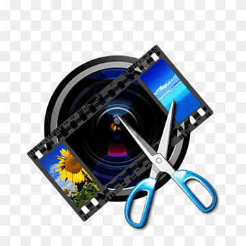
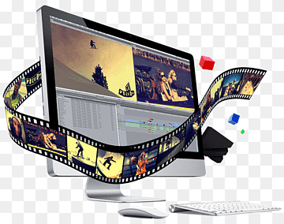

Hi, My name is Anand
and I am a passinate
Work Experience
Video Editor (Free Lancer)
I am well-versed in industry-standard editing software such as Adobe Premiere Pro and Final Cut Pro, and I am constantly staying up-to-date with the latest trends and techniques in video editing. One of my greatest strengths as a video editor is my ability to collaborate effectively with clients and colleagues.

Digital Editor (Free Lancer)
A digital editor is the head of an online content team. Digital editors create, edit, format and publish digital content. They work closely with a team of writers and graphic artists, coordinating their output for online publication
Video Grapher (Free Lancer)
A “Videographer is someone who is responsible for recording live events and small scale video productions. Videographers focus on smaller productions like documentaries, live events, short films, legal depositions, weddings, birthday parties, sports events, commercials, and training videos.

Video Editing (Free Lancer)
Editing involves making revisions to and suggestions about the content of a document. It includes improving the accuracy of language, the flow, the organization and structure, and the overall readability of the text. It also involves checking for grammatical and spelling errors.
Video Maker (Free Lancer)
Assembling raw footage and transferring or uploading to a computer. Analyzing and following a script, screenplay or outline when performing edits. Inputting sound to enhance footage, which may include selecting music and writing voice-overs. Adding graphics to enhance footage.